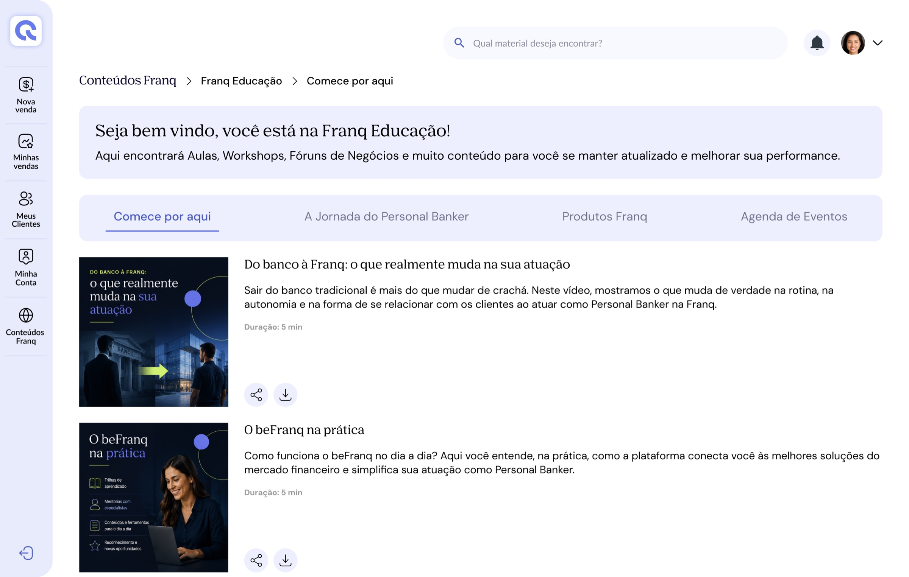
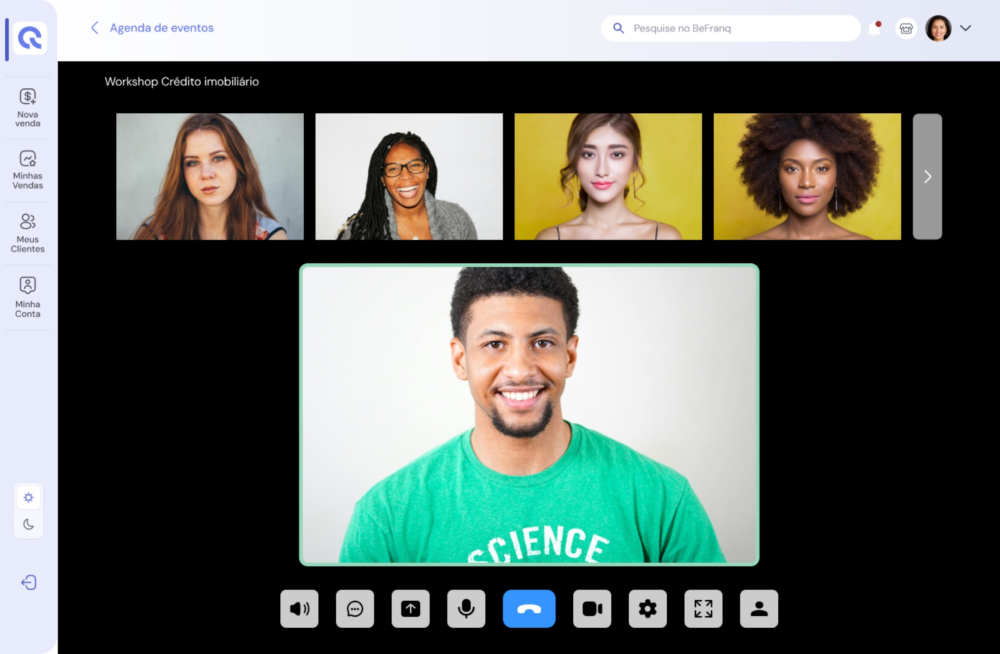

Franq Educação is the training platform for Personal Bankers, created to centralize content, classes, workshops, business forums and support materials. The project covered the design of both web and mobile experiences, structuring learning tracks by topic, interactive content and assessment activities with detailed feedback. The challenge was turning training into a more accessible, organized and engaging experience, concentrating the whole learning journey in a single platform and reducing reliance on external tools.
Personal Banker training happened across different formats and moments — content, lessons, activities and live events — with no single place connecting them. That meant moving between external tools and made it hard to know where you were in the journey and what came next.
A web and mobile platform that brings together learning tracks, lessons, activities with per-question feedback and an events calendar integrated with Zoom, with the same information architecture on both channels.
UX Designer, responsible for the experience architecture, touchpoint mapping, flows, web and mobile interface design, and defining navigation patterns and reusable components.
Design process
Before designing screens, I defined how courses, activities and events would connect in a single journey. The work followed four phases: Discover, Define, Design and Deliver.
Discover: understand the different moments of training and where the journey broke across tools.
Challenge and journey / Touchpoint mapping
Define: organize the experience into areas and structure the information architecture.
Experience areas / Information architecture
Design: flows and interfaces for courses, activities and events, on web and app.
Flows / Web and mobile interfaces / Patterns and components
Deliver: high-fidelity screens consistent across channels, with light and dark mode.
Final prototype
Training for Personal Bankers involved different formats and moments in the learning journey. The challenge was to create a centralized experience able to organize content, courses, activities and events in a single platform, making learning more accessible and reducing reliance on external tools.
The challenge was connecting different moments of the journey:
As part of the process, the main journey touchpoints were mapped to understand how different experiences, inside and outside the platform, connected. This was especially important in the events experience, which involved the transition between Franq Educação and Zoom.
| Moment | Touchpoint | Goal |
|---|---|---|
| Discovery | Franq Educação | Find content and events |
| Learning | Course / Lesson | Consume the content |
| Assessment | Activity | Test knowledge |
| Feedback | Result | Understand performance |
| Event discovery | Events area | Find relevant events |
| Attendance | Zoom | Join the live event |
| Continuity | Platform | Continue the learning journey |
Before designing the interfaces, I worked on defining the experience architecture and the main touchpoints between the user and the platform. The goal was to make sure courses, activities and events did not work as isolated products, but as parts of the same learning journey.
An area where the Personal Banker could access content organized in tracks and follow their progress.
A space integrated into the courses to test knowledge and receive feedback on the answers.
An area to discover, follow and take part in workshops and other training events.
The different touchpoints connecting these experiences within the user journey.
The architecture was structured to make content discovery easier and to create clear navigation between the different learning formats.
Information architecture · Franq Educação
The courses area was structured to help the user find relevant content and follow their learning journey.
Organizing the content aimed to make the journey clearer, letting the user quickly understand where they were and what the next steps were.
Watching the content was only part of the experience. It was also necessary to create a way to assess learning and give feedback to the user.
For the activities, I designed a multiple-choice experience with per-question feedback. The intent was not only to tell the user whether they were right or wrong, but to use feedback as part of the learning process itself.
Beyond courses, Franq Educação also needed to bring together workshops and live events. For that, a dedicated area for discovering and joining events was created, integrated with Zoom.
The challenge was not only integrating an external tool technically, but keeping the experience coherent for the user. The journey was designed so that discovery, registration and attendance happened in an integrated way within the platform.
The interfaces were built to keep consistency between the web and mobile experiences. Navigation patterns, components and reusable behaviors were defined so that different areas of the platform worked as part of the same product.
The project was developed considering different usage contexts. The web experience allowed a broader view of content and journey, while mobile had to preserve the main features in an interface adapted for faster interactions and different contexts.
The high-fidelity screens bring together the decisions from earlier phases: the same information architecture on web and app, the track always showing where the user is and what comes next, and live events integrated into the platform.


Measuring success
Online learning platforms usually lose most people before the end — and time is the main obstacle to learning at work. That is the scenario a single journey with visible progress tries to change.
52%
of people who registered for Harvard and MIT open online courses (edX) never started the course; among all registrants, only about 3% to 5% completed it.
Reich & Ruipérez-Valiente · The MOOC pivot, Science, 2019 ↗94%
of employees say they would stay longer at a company that invested in their development — and “lack of time” is the top challenge to learning at work.
LinkedIn · Workplace Learning Report, 2018 ↗The indicators below translate the project goals into measurable signals, with how to measure each one.
Outcome
The result was a centralized learning experience, bringing different training formats together inside the Franq ecosystem. The platform now connects content, assessments and events in a single journey, reducing the need to move between different tools to complete training activities.
Designing every step of this journey, from discovering content to joining a live event, reinforced a few principles I carry into other projects:
Next project
Natural Extremo